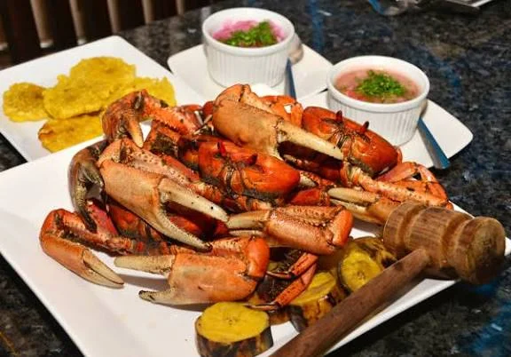

Datos curiosos
La gastronomia de la costa ecuatoriana destaca por transformar ingredientes locales en verdaderas joyas de sabor con historias fascinantes.
El encebollado, famoso por ser el mejor remedio para la resaca,nacio en los puertos como un caldo nutritivo y económico que preparaban los pescadores con albacora y yuca fresca.El verde es escencial en la mesa.
